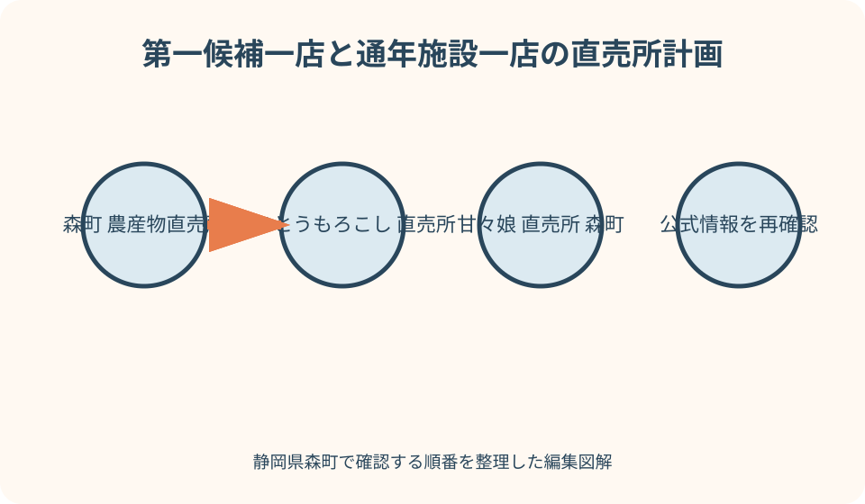
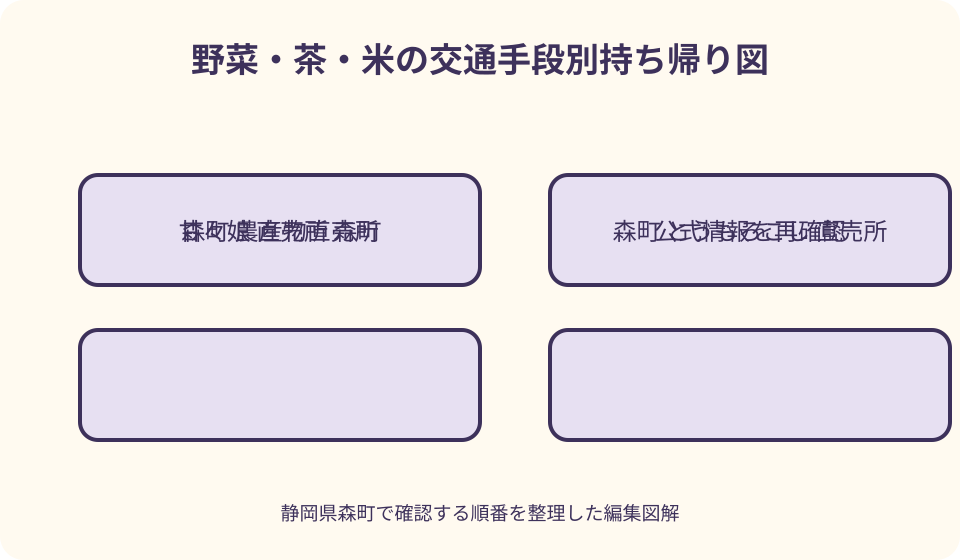

農産物・直売所｜最終確認 2026-08-10
静岡県森町の農産物直売所ガイド｜とうもろこし・野菜・茶を旬で選ぶ
森町の直売所は、まず2026年町公式とうもろこしMAPで販売時期と連絡先を確認し、季節の個人販売は出発前に営業・在庫・駐車を電話確認します。複数の農園を当てずっぽうに回らず、第一候補が完売ならJA森の市など通年型施設、別の旬野菜、茶へ切り替えます。価格・品種・在庫は当日の表示を優先し、とうもろこし等は購入後すぐ保冷方法を販売者へ確認してください。
最初に分ける——通年型の直売所と収穫期だけの販売所
森町の農産物購入先には、JA森の市のように幅広い品を扱う通年型施設と、とうもろこしの収穫期に農園や店舗で開く季節販売先があります。町公式MAPへ掲載されても一年中開く意味ではありません。訪問月に何が収穫されるかを確認し、施設の型を先に分けます。
通年型でも、同じ野菜が毎日並ぶわけではありません。生産者の出荷、天候、季節で品目と量が変わります。季節販売はさらに収穫がある日だけ開く場合があるため、営業時間の記載だけを見ず、当日朝に販売があるかを連絡先へ確認します。
個人農園の販売場所は、一般店舗の広い駐車場や待合を備えるとは限りません。MAPの住所、入口、駐車方法、列の作り方を尋ね、畑、住宅敷地、路肩へ勝手に入らないようにします。家族全員で列へ広がらず、代表者が案内に従います。
初訪問では、第一候補を一か所、通年型の第二候補を一か所だけ決めます。完売情報を聞いてから町内を何周もせず、別品へ切り替えます。直売所巡りの数ではなく、販売者と地域道路へ負担をかけずに持ち帰ることを成功条件にします。
2026年とうもろこしMAPを読む——販売時期と連絡先を旅程へ移す
森町公式は2026年5月22日更新の案内で、町産とうもろこしが5月下旬頃から順次販売されるとし、販売所の場所と時期をPDF地図にまとめています。地図の番号だけを保存せず、店名、電話、販売時期、訪問日、ナビ地点を自分のメモへ移します。
MAPに示す販売時期は収穫の目安であり、初日と最終日を保証するものではありません。雨、気温、生育、収穫量で変わるため、訪問日前日に公式ページの更新を見て、当日朝に第一候補へ確認します。SNSがある農園も、投稿日時を確認します。
品種も販売所ごと、時期ごとに変わります。甘々娘だけを探すのか、森の甘太郎や白い品種等も候補にするのかを決め、当日の品種名を店頭で聞きます。包装に表示がなければ、自分の推測で品種を決めて人へ渡しません。
地図上で近く見える二店でも、生活道路、右折、駐車待ちで移動時間が延びます。完売後に次々と移る計画を作らず、一店で買えなければJA森の市または茶・別野菜へ切り替えます。MAPは周回ルートではなく、一店を選ぶ資料として使います。
朝の売り切れへ備える——早起きより先に販売有無を確認する
観光協会は、森町のとうもろこしが旬に人気を集め、午前中に多くの直売所で完売することがあると案内しています。早く行けば必ず買えるとは限らず、収穫がない日や予約分で少ない日もあります。出発時刻より販売確認を先にします。
農園へ電話する場合は、営業開始直前の忙しい時間に長く質問せず、訪問予定時刻、当日販売、取り置き、駐車の四点に絞ります。取り置き不可なら受け入れ、電話したことを優先購入の権利にしません。
開店前に到着しても、道路へ列を作る、エンジンをかけたまま待つ、近隣店舗へ駐車する行為を避けます。販売者が指定する待機場所がなければ、早過ぎる到着をやめ、通年型施設へ向かいます。子どもを車内へ残しません。
完売時は理由を尋ね続けず、次回の販売見込みを短く確認します。当日中に別農園を連続訪問するより、翌日または別週を予約し、今日はレタス、茶、米、加工品へ変更します。旬の終わりなら翌年のMAP更新を待ちます。

甘々娘と別品種——名前ではなく当日の表示と調理を聞く
甘々娘は森町のとうもろこしを探す人の代表的な検索語ですが、町公式MAPには複数販売先と異なる販売期間が載ります。観光協会も甘々娘、森の甘太郎、白い品種など多様なスイートコーンを紹介しています。すべてが同日に買えるとは考えません。
味の甘さや食感を未経験のまま順位付けせず、収穫日、品種、推奨する加熱方法、保存を販売者へ聞きます。生で食べられるという一般評判を個別商品へ当てはめず、洗浄と加熱は購入先の説明へ従います。
袋単位、箱単位、規格外、発送など販売形態も店ごとに異なります。価格を過去記事から固定せず、当日の本数、税込額、支払方法、箱代、送料を確認します。家庭で食べ切れる本数を計算し、大袋を買ってから配り先を探しません。
贈る場合は、相手が受け取れる日、冷蔵庫容量、調理可能かを確認します。発送可でも到着日や品質保証の条件があるため、伝票を販売者と確認します。旅行中に長時間持つなら、自宅用の少量へ絞ります。
JA森の市を使う——駅近くの通年型候補として在庫を尋ねる
JA遠州中央の森の市は、森町産の野菜、果物、茶、米、次郎柿、とうもろこし等を扱う直売所として公式・観光協会に掲載されています。遠州森駅から西へ約200メートルという案内があり、車なしの人にも候補になります。
通年営業の案内があっても、年末年始や盆の変更、臨時休業を確認します。とうもろこし販売時期も要確認とされるため、駅到着後に品切れを知るより、出発前に電話0538-85-0831へ当日の入荷を聞きます。
農産物を複数比較できる利点がある一方、直売所は市場のように全品が補充され続ける場所ではありません。売場の産地、生産者、収穫・包装表示を読み、同じ品目でも保存条件を個別に確認します。
列車利用では、買った量を持って駅まで歩き、乗換をするところまで計画します。米、大箱、葉物を同時に買わず、保冷バッグと手提げで安全に持てる量へ絞ります。必要なら正規配送の可否を相談します。
山里の市とアクティ森周辺——体験のついでと仕入れを混同しない
観光協会はアクティ森敷地内の山里の市で、季節野菜、加工品、弁当、菓子等を扱うと紹介しています。とうもろこしMAPにも販売先として載りますが、アクティ森の体験受付やレストランと同じ営業条件とは限りません。山里の市の電話と営業を別に確認します。
陶芸や川遊びの予約日に寄るなら、体験開始前に買って車内へ放置しないよう、買い物を帰りへ回します。帰る時刻には閉店している可能性があるため、取り置き・保冷預かりを推測せず、訪問前に相談します。
山里の市が休みまたは完売なら、同じ敷地の物販に同じ農産物があるとは限りません。森のよんな市、レストラン、山里の市の名称と運営を区別し、農産物を探す場合は店頭の産地表示を確認します。
キャンプ・コテージ用の買い出しでは、山里の市を唯一の食材供給先にしません。主食、水、調味料、子ども食は町なかで確保し、当日並ぶ野菜を一品加える使い方にします。大量調達や夜の不足を直売所へ依存しません。

野菜・米・茶を選ぶ——旬がない日は通年品へ切り替える
とうもろこし以外にも、観光協会はレタス、次郎柿、メロン、しいたけ、米、自然薯等を森町の農の恵みとして紹介しています。収穫期は別々なので、訪問日に旬の品を一つ尋ねます。目当てがなければ、米や茶、加工品へ替えます。
葉物は潰れと温度、果実は食べ頃と衝撃、根菜は重さと土、米は持ち運び量が判断軸です。見栄えだけで選ばず、保存場所と食べ切る日数を販売者へ相談します。車なしなら軽い茶や乾物を増やします。
茶は農産物でも、茶葉、ティーバッグ、粉末で使い方が違います。産地、収穫年、内容量、保存、急須の有無を確認します。直売所で買ったことだけを森町産の根拠にせず、包装表示を読みます。
規格外や徳用品を選ぶ場合、安さだけでなく傷、消費の早さ、加工向けかを聞きます。家庭で使い切れない量を買わず、冷凍や加工が必要なら帰宅後すぐ作業できる日だけにします。
現金と決済——個人販売へ大きな紙幣だけで向かわない
決済方法は直売所ごとに異なります。JAの施設で使える方法が個人農園でも使えるとは限らず、キャッシュレスのロゴが去年と同じとも限りません。電話確認時に現金のみかを聞き、小額紙幣と硬貨を用意します。
価格は当日の店頭表示を優先します。袋、本数、重量、等級、箱、送料で金額が変わるため、観光協会の過去掲載額を予算表へ固定しません。会計前に商品単位を確認し、列の途中で分け直さないようにします。
無人販売では、表示された金額と支払方法を守り、お釣りを勝手に作らず、商品を開封して選別しません。連絡先がある場合も、早朝や夜に緊急でない電話をせず、案内時間内に確認します。
領収書が必要な職場購入は、発行可否を先に聞きます。個人販売で対応できない場合はJA等の施設を選び、販売者へ無理を求めません。贈答用の箱・袋も別料金かを確認します。
保冷と持ち帰り——買った時刻から帰宅までを一続きにする
とうもろこしや葉物の保存は、販売者の説明を最優先にします。購入後に観光を続けるなら、車内温度と時間を伝え、保冷方法を聞きます。真夏の車内を短時間だから安全と考えず、買い物を帰路近くへ寄せます。
保冷バッグには、十分な保冷剤と水漏れ対策を用意します。ただし茶葉や乾物を結露する袋へ入れず、冷やす物、乾いた物、潰れやすい物を分けます。農産物を氷へ直接触れさせません。
車では直射日光の当たらない安定した場所へ置き、座席上で転がさないよう箱を固定します。冷房を切って長時間駐車する場合は、農産物を置いたままにせず、先に帰宅または発送を選びます。
公共交通では、駅までの徒歩、待ち時間、乗換を持ち歩き時間に含めます。重い箱を階段で運ぶ危険があれば少量へ減らし、発送を相談します。買える量ではなく、安全に持てる量を上限にします。
個人販売所のマナー——畑と暮らしの場所へ入らない
個人販売所は生産者の仕事場や住居に近い場合があります。営業札、ロープ、駐車案内に従い、畑へ入り、作物へ触れ、家の玄関を訪ね回ることをしません。写真撮影も人、車の番号、住宅が写るため許可を取ります。
路肩での停車待ち、交差点付近の駐車、近隣店舗への無断駐車は地域へ負担を残します。駐車場が満車なら周回せず、別の安全な場所で電話するか、通年型施設へ移ります。運転者だけで判断せず、同乗者にも移動先を伝えます。
完売札が出た後に在庫を求めたり、家庭用の取り置きを交渉したりしません。販売者が翌日予定を案内できる場合だけ聞き、収穫都合を尊重します。早朝販売でも必要以上に大声を出しません。
購入後にSNSへ投稿するなら、当日の在庫が続くような表現を避け、確認日時を添えます。価格、販売時期、電話番号を転載する場合は公式MAPへリンクし、翌年も同じと断定しません。
車なしの買い方——遠州森駅と森の市を一往復にする
車なしなら、天竜浜名湖鉄道の遠州森駅から西約200メートルのJA森の市を第一候補にします。個人農園を徒歩やタクシーで複数回る計画は、距離、荷物、炎天下、帰りの列車で崩れやすいため避けます。
駅到着前に営業と当日入荷を確認し、帰りの列車から逆算して会計終了時刻を決めます。保冷バッグ、手提げ、雨具を用意し、両手がふさがる量を買いません。乗換時の階段も荷物量の判断に含めます。
とうもろこしがなければ、茶、米の小袋、加工品、別の旬野菜へ替えます。どうしても箱で欲しい場合は発送可否を聞き、列車へ大箱を持ち込むことを優先しません。到着日と受取時間も確認します。
町営バスやタクシーを使う場合は当日呼べると仮定せず、時刻、予約、荷物を確認します。山里の市へ行くならアクティ森体験との接続を作り、買い物だけで往復する負担を比べます。
売り切れ時の代案——店を増やさず品目を替える
第一候補が完売したら、同じ品を求めて農園を増やすのではなく、通年施設、別品目、別日という順に替えます。JA森の市へ入荷を確認し、なければレタス、米、茶、加工品を候補にします。
甘々娘が終わった時期なら、後に出る品種があるか公式MAPと農園へ確認します。品種名を指定しない自宅用なら当日収穫品を尋ね、贈答で品種が重要なら発送予約へ切り替えます。
悪天候や高温で保冷が難しい日は、生鮮品を買わず、茶や常温加工品へ替えます。せっかく来たという理由で車内へ野菜を長く置かず、次回の収穫日に訪れる計画を残します。安全な持ち帰りを購入数より優先します。
販売所が休みでも、畑や倉庫を訪ねません。公式連絡先から次の営業を確認し、観光協会の特産品一覧で町内の正規販売場所を探します。閉店後の無人販売を期待して走り回りません。
良い点——収穫時期と作り手の距離を買い物から学べる
森町の直売所の良い点は、品目ごとの旬と販売期間が見えることです。とうもろこしが初夏、次郎柿が秋というように、いつでも同じ品がある売場とは違い、訪問時期と農作業が結び付きます。
個人販売では当日の品種や保存を生産者へ短く確認でき、JA森の市では複数生産者の品を比較できます。どちらが上という話ではなく、一品を深く聞く場所と、旬全体を見る場所として使い分けられます。
茶、米、野菜、果実が同じ町内で選べるため、生鮮品を持てない人も茶や加工品へ切り替えられます。車、列車、贈る人数に合わせ、農の背景を別の形で持ち帰れます。包装の産地表示は個別に確認します。
売り切れも、収穫量に限りがある直売の特徴です。買えなかった日を失敗にせず、次の販売時期を知り、別の旬を選ぶことで、町を一度の消費先ではなく季節ごとに訪れる場所として捉えられます。
注文したい点——当日営業・完売を一枚のMAPで更新してほしい
利用者として注文したい点は、とうもろこしMAPに各店の当日営業、販売中、完売、翌日予定を更新時刻付きで重ねることです。電話が集中する朝に、販売者が簡単な状態だけ更新できれば、不要な車移動を減らせます。
個人販売、通年直売所、コンビニ併設、アクティ森敷地内を色分けし、駐車台数、現金、発送、取り置き、トイレ有無を同じ項目で表示すると選びやすくなります。未確認欄は空白ではなく電話確認と示すべきです。
品種と販売時期には確認年を付け、前年MAPが検索で残っても今年の情報へ誘導してほしいところです。価格は変動するため、固定額より店頭表示の案内を優先し、袋・箱の単位を掲載します。
車なし向けには、遠州森駅から森の市までの徒歩、町営バスで行ける施設、発送対応を別表示すると役立ちます。農園を複数回るモデルより、一店と通年施設を組み合わせる安全な行程を提案してほしいところです。
対案・結論——第一候補一店、通年施設一店で終える
実用的な計画は、2026年MAPから第一候補を一店選び、当日販売と駐車を確認し、完売ならJA森の市へ移る二段階です。二店ともなければ品目を茶・米・別野菜へ替え、農園巡りを続けません。
とうもろこしは品種、収穫日、保存、加熱を店頭で聞き、価格と本数は当日表示で確認します。現金、小さな保冷バッグ、濡れ防止袋を用意し、買った後は観光を長く続けません。
車なしなら遠州森駅と森の市を一往復にし、持てない箱は発送を相談します。アクティ森の日帰り体験者は山里の市を帰路に確認し、体験前の車内保管を避けます。閉店時刻から逆算して買い物時間を確保します。
直売所の目的は最安値や最多店舗ではなく、旬の品を販売者の決まりに沿って受け取り、適切な状態で食卓へ運ぶことです。完売を受け入れ、また別の季節に来る余白まで含めて計画します。
大石の視点——買えなかった店を地図から消さない
私なら、完売した店を外れとして消さず、確認日時、品種、次回見込みを地図へ残します。翌年は同じ日付を鵜呑みにせず、収穫が天候で変わることを思い出す材料になります。
買った品は正面写真より、表示、品種、保存説明、購入時刻を記録します。味の感想を体験していない人へ一般化せず、販売者の説明と自分の調理を分けて残します。翌年の販売条件は改めて確認します。
子どもへは、甘いかどうかを当てさせる前に、何月に収穫され、なぜ朝に販売され、なぜ完売するかを考えてもらいます。買えない日も農産物が工場製品と違うことを学べます。
直売所を応援する行動は大量購入だけではありません。路上へ並ばず、釣り銭を困らせず、畑へ入らず、完売を受け入れることも含まれます。一袋を丁寧に持ち帰る方が、次の訪問へ続く買い方です。
公式情報・確認先
掲載内容は次の一次情報を基礎に整理しました。営業、料金、催し、交通は変わるため、出発前または手続き前にリンク先で最新情報を確認してください。
- 静岡県森町 2026年とうもろこし案内（静岡県森町、2026-08-10確認）
- 静岡県森町 遠州森町とうもろこしMAP（静岡県森町、2026-08-10確認）
- 静岡県森町 観光案内・地図（静岡県森町、2026-08-10確認）
- 静岡県森町観光協会 特産品・お土産（静岡県森町観光協会、2026-08-10確認）
- 静岡県森町観光協会 JA森の市（静岡県森町観光協会、2026-08-10確認）
- JA遠州中央 森の市（jaenchu.ja-shizuoka.or.jp、2026-08-10確認）
- 静岡県森町観光協会 山里の市等（静岡県森町観光協会、2026-08-10確認）
- 村松さとる農園（静岡県森町観光協会、2026-08-10確認）